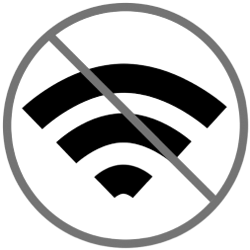
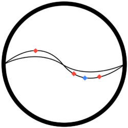
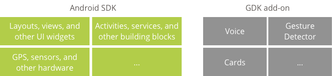
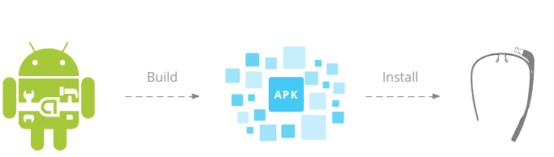
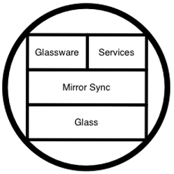
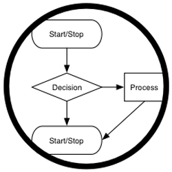
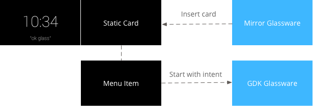

When developing Glassware, the best practice is to develop with the Glass Development Kit. This allows you to access low-level hardware features and create robust experiences in a familiar Android environment.
We recommend you read the design patterns guide. They'll help you design your Glassware and go over best practices that will help you build quickly.
The Glass Development Kit (GDK) is an add-on to the Android SDK that lets you build Glassware that runs directly on Glass. Use the GDK to take advantage of the following features:
Real-time User Interaction
Offline Functionality
Access to Hardware
By using the Android SDK and GDK, you can leverage the vast array of Android APIs and also design a great experience for Glass.
We designed the Glass platform to make the existing Android SDK just work on Glass. This lets you code in a familiar environment, but for a uniquely novel device.
In addition, you can use all of the existing Android development tools, and your Glassware is even delivered as a standard Android package (APK).
This RESTful API lets you build Glassware by letting you use the language of your choice and providing web-based APIs. You may want to use the Mirror API if you need:
Platform independence
Common infrastructure
Built-in functionality
Mirror API Glassware can invoke GDK Glassware through a menu item. You can use this hybrid model to leverage existing web properties that can launch fuller experiences that run directly on Glass.
Portions of this page are reproduced from work created and shared by Google and used according to terms described in the Creative Commons 4.0 Attribution License.